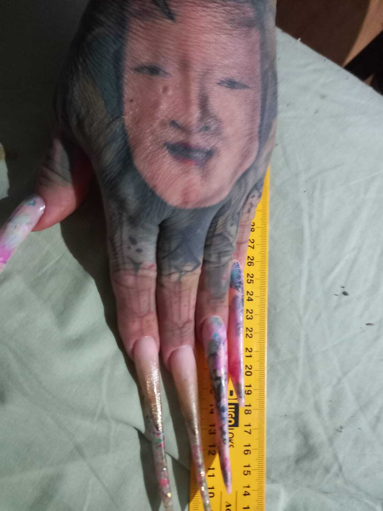
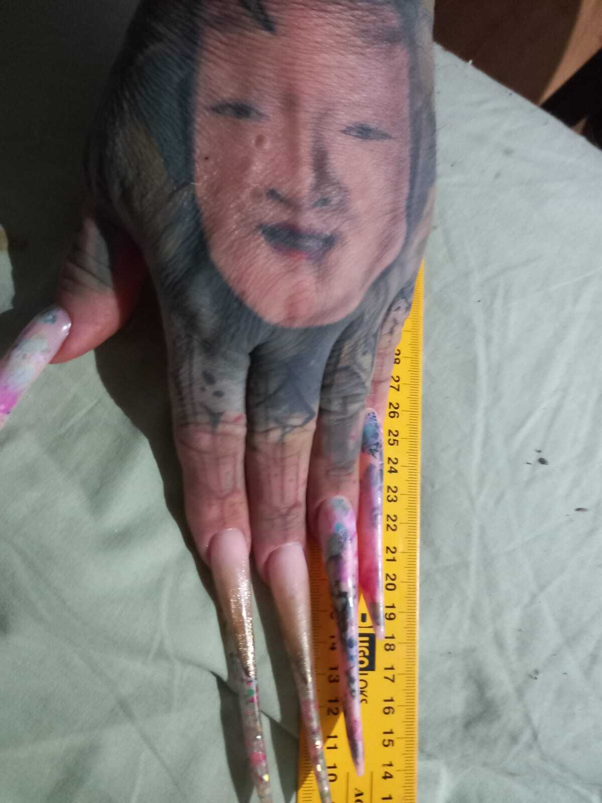

Vasiliy l'Ordinaire
2025, en cours d'écriture
Au fil des années, mon père s’est transformé. D’abord, ce sont ses mains que j’ai vues transformées. Puis, le torse et le dos. Ensuite les jambes. Et enfin, le visage.
Je pense que c’est une personne queer, mais il ne le sait pas, car il ne connaît même pas ce mot. Il est russe et vit dans la Russie contemporaine, où, aujourd’hui, l’homosexualité, la non-binarité et les personnes trans sont considérées, sur le plan législatif, comme des terroristes et des extrémistes.
Depuis quelques années, il est logé dans un morceau de terre de trois mètres carrés, avec un petit banc pour recevoir les visiteurs. Il y a aussi une pierre tombale, sur laquelle figure un portrait de lui âgé, sans aucune trace de ses tatouages, piercings et tresses colorées. Juste le portrait d’un monsieur tout-le-monde, comme si de rien n’était. Combien d’autres personnes ont vu leur identité s’effacer pendant leur vie ou après leur mort ?
___
Journal du projet :
J'ai obtenu l'aide d'Adagp pour la recherche autour de ce film en cours d'écriture. Maintenant j'ai plus de temps pour faire des tests de traitement d'image numériques.
Je recommande l'article d'Anna Sokolova, "There is no Death… Soviet Funeral Reforming en Marche", publié en 2023.
 
